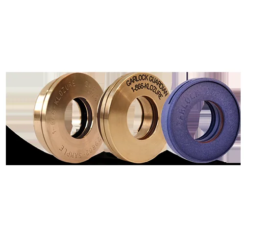

单元化迷宫设计 · 防止污染物侵入与润滑剂泄漏 · 延长轴承寿命

KLOZURE® 轴承隔离器采用非接触式单元化迷宫设计，在保护轴承免受水、粉尘、泥浆、化学品等污染物侵入的同时，有效防止润滑介质泄漏。相比传统唇形油封，隔离器无唇口接触磨损，使用寿命更长、维护更少，是泵、电机、齿轮箱等旋转设备轴承腔的理想保护方案。
Garlock KLOZURE® 轴承隔离器采用组合迷宫结构，可提供整体式和剖分式两种设计：剖分式无需拆卸联轴器或对中设备即可现场安装；另有 FLOOD-GARD™ 专用于全浸没（油浴/浸水）工况，以及表面安装型、汽轮机专用型等多种结构，覆盖通用与特殊工况。上海物泽实业作为 Garlock 官方授权中国经销商，现货供应 KLOZURE® 轴承隔离器系列，提供轴径测绘与选型服务。
| 参数项 | KLOZURE® 轴承隔离器 |
|---|---|
| 密封原理 | 非接触式单元化迷宫 |
| 轴径范围 | 覆盖常用泵/电机/齿轮箱轴径（具体以官方资料为准） |
| 结构形式 | 整体式 / 剖分式 / 表面安装型 / 浸没型 |
| 防护对象 | 水、粉尘、泥浆、化学品侵入；润滑剂泄漏 |
| 典型设备 | 离心泵、电机、齿轮箱、搅拌器、鼓风机、汽轮机 |
| 代表系列 | GUARDIAN™、ISO-GARD®、FLOOD-GARD™、表面安装型 |
以下为 Garlock 官方轴承隔离器数据表与技术手册（PDF）。
提供轴径、设备型号与工况（介质/是否浸没/是否需剖分），我们将协助选型并回复报价与货期。全部产品原装进口，附授权证书。
产品技术描述参考 Garlock（卡勒克密封）官方公开资料整理；KLOZURE®、GUARDIAN™、ISO-GARD®、FLOOD-GARD™、MILL-RIGHT® 等商标归 Garlock 及其关联公司所有，本司为授权经销商。技术参数与选型信息以 Garlock 原厂 PDF 数据表为准，正式选型请咨询专业工程师。